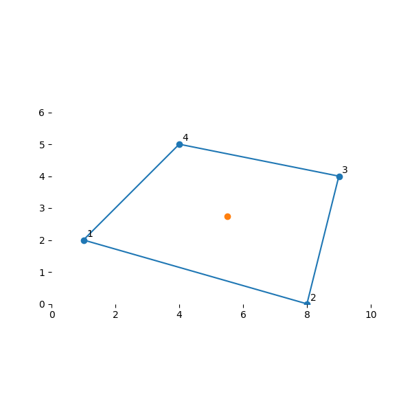

Note
Go to the end to download the full example code
Build a Finite Element#
A finite element machinery built for a quadrilateral element using an isoparametric formulation and validated with PyMAPDL.
To illustrate it with a concrete example, we take a 2D element described by the following (x, y) node locations, an isotropic material (Young’s modulus of 30e6 psi and Poission’s ratio of 0.25) and unit thickness, providing a live implementation of the discussions in Daryl Logan’s A First Course in the Finite Element Method (2nd Ed., PWS Publishing 1993).
# sphinx_gallery_thumbnail_number = 2
import itertools
import matplotlib.pyplot as plt
import numpy as np
np.set_printoptions(linewidth=120)
Deriving the stiffness matrix for a 2D linear rectangular element#
Build a basic 2D element with the following coordinates:
node_xy = [(1, 2), (8, 0), (9, 4), (4, 5)]
node_ids = list(range(1, 1 + 4))
nodes = np.array(node_xy, dtype=float)
def plot_my_mesh(nodes, points=None):
fig = plt.figure(figsize=(6, 6))
ax = plt.gca()
plt.scatter(nodes[:, 0], nodes[:, 1])
if points is not None:
plot_pts = points if points.ndim > 1 else points[None, :]
plt.scatter(plot_pts[:, 0], plot_pts[:, 1])
nodes_around = np.reshape(np.take(nodes, range(10), mode="wrap"), (-1, 2))
plt.plot(nodes_around[:, 0], nodes_around[:, 1])
for i, n in enumerate(nodes):
ax.annotate(i + 1, n + np.array([0.1, 0.1]))
plt.xlim(0, 10)
plt.ylim(0, 6)
plt.box(False)
ax.set_aspect(1)
plt.show()
plot_my_mesh(nodes)
We will create an element class MyElementDemo to carry all the data and
methods necessary for this demonstration. Although we could program the
whole class at once (as done at the bottom of this exercise), we will add
data and methods piecemeal so we can comment on their meaning. We will
create an instance of this class that we’ll call my_elem to represent our
specific element example
Shape Functions#
Element shape functions allow us to interpolate some quantity, e.g., a component of displacement, from the corner nodes to any point throughout the element. That way, as the structure deforms, we will know not only the displacement at the nodes but also the displacements for any point within.
What’s special for an isoparametric formulation is to select a canonical shape for our 2D element. We assume that any 2D quadrilateral can be mapped to a regular square, for example a domain in \({\rm I\!R}^2\) such as \(s \in [-1,1]\) and \(t\in [-1,1]\). We derive all of our physical quantities on that square and use the mapping to transform their values for the actual shapes of our elements. This transformation will help simplify the calculation of integrals necessary for measuring how strain energy accumulates throughout the continuum of the element as the discrete nodes move and deform the shape.
For an isoparametric 2D element, we define 4 shape functions as follows:
These functions are built in such a way that the function at node \(i\) vanishes at all other nodes and their sum is 1 at all points in the domain.
For fun, let’s plot them to see what each of them contributes to the interpolation of the element
s = np.linspace(-1, 1, 11)
t = np.linspace(-1, 1, 11)
S, T = np.meshgrid(s, t)
fig = plt.figure(figsize=(10, 10))
ax1 = fig.add_subplot(2, 2, 1, projection="3d")
ax1.plot_surface(S, T, 0.25 * (1 - S) * (1 - T))
ax1.title.set_text(r"N1")
ax2 = fig.add_subplot(2, 2, 2, projection="3d")
ax2.plot_surface(S, T, 0.25 * (1 + S) * (1 - T))
ax2.title.set_text(r"N2")
ax3 = fig.add_subplot(2, 2, 3, projection="3d")
ax3.plot_surface(S, T, 0.25 * (1 + S) * (1 + T))
ax3.title.set_text(r"N3")
ax4 = fig.add_subplot(2, 2, 4, projection="3d")
ax4.plot_surface(S, T, 0.25 * (1 - S) * (1 + T))
ax4.title.set_text(r"N4")
fig.tight_layout()
plt.show()
Let’s add the shape function method to our class
To interpolate a quantity, e.g., position, from the nodes to arbitrary points throughout the element we use the following operation.
To see how this is useful, let’s interpolate some common points. The centroid of our isoparametric element was \((s,t) = (0, 0)\). Let’s see how the interpolation obtains the equivalent point in our real element:
array([5.5 , 2.75])
Plotting the mesh.
Gauss Quadrature#
Gauss Quadrature is a method for approximating the integral of a function \(\int f(x) dx\) by a finite sum \(\sum w_i f(x_i)\). By sampling the function \(f(x)\) at a finite number of locations in the domain and properly scaling their values, it is possible to obtain an estimate of the integral. It turns out there are optimal locations for the sampling points \(x_i\) and their weight values \(w_i\). For a 2D function in the domain of our isoparametric element, i.e., \((s,t) \in {\rm I\!R}^2\) with \(s \in [-1,1]\) and \(t\in [-1,1]\), the optimal locations for 4 point-integration are:
gauss_pts = (
np.array([[-1, -1], [1, -1], [1, 1], [-1, 1]], dtype=float) * 0.57735026918962
)
MyElementDemo.gauss_pts = gauss_pts
MyElementDemo.gauss_pts
array([[-0.57735027, -0.57735027],
[ 0.57735027, -0.57735027],
[ 0.57735027, 0.57735027],
[-0.57735027, 0.57735027]])
Their locations in the element of interest
gauss_pt_locs = np.stack(
[
my_elem.interpolate_nodal_values(*gauss_pt, nodes)
for gauss_pt in MyElementDemo.gauss_pts
]
)
plot_my_mesh(nodes, gauss_pt_locs)
Strain calculation#
Strain is related to displacement by a linear differential operator. For 2D, we consider only its in-plain components:
and infer the operator as follows:
We recall the displacements \(\begin{bmatrix}u_x & u_y\end{bmatrix}^T\) are known throughout the element thanks to the shape functions. Thus
To incorporate the shape functions into the expressions of strain above we need to replace the differential operator relative to \(x\) and \(y\) with its equivalent expressed in terms of \(s\) and \(t\). This requires the chain rule, which in multivariate calculus is facilitated with a Jacobian matrix (and its determinant):
Therefore:
where
and
Implementation: Jacobians#
The Jacobian can be obtained by substituting the expressions for positions \(x\) and \(y\) throughout as a function of the nodal locations with the help of the shape functions. It turns out to be equivalent to the following bilinear form:
We are now ready to implement it into our element
Next, we investigate how the Jacobians vary within the element. First for our subject element:
my_elem.J(-1, -1), my_elem.J(0, 0), my_elem.J(1, 1)
(6.75, 6.0, 5.25)
Implementation: B Matrix#
Similarly, we can implement our expression for the B matrix, which converts nodal displacements \(\mathbf{u_{\text{nodal}}}\) to strains \(\mathbf{\varepsilon}\), by substituting the D operator, the shape functions and nodal locations:
where
and
for
def grad_N(self, s, t):
return 0.25 * np.array(
[
[-(1 - t), +(1 - t), +(1 + t), -(1 + t)],
[-(1 - s), -(1 + s), +(1 + s), +(1 - s)],
],
dtype=float,
)
def B(self, s, t):
j = self.J(s, t)
S = np.array([-1 + s, -1 - s, +1 + s, +1 - s], dtype=float)
T = np.array([-1 + t, +1 - t, +1 + t, -1 - t], dtype=float)
[d, c], [a, b] = (
0.25 * np.c_[self.nodes[:, 0], self.nodes[:, 1]].T.dot(np.c_[S, T])
).tolist()
n = self.grad_N(s, t)
def _bi_(i):
return np.array(
[
[a * n[0, i] - b * n[1, i], 0],
[0, c * n[1, i] - d * n[0, i]],
[c * n[1, i] - d * n[0, i], a * n[0, i] - b * n[1, i]],
],
dtype=float,
)
return 1.0 / j * np.c_[_bi_(0), _bi_(1), _bi_(2), _bi_(3)]
MyElementDemo.grad_N = grad_N
MyElementDemo.B = B
my_elem.B(0, 0)
array([[-0.10416667, 0. , 0.04166667, 0. , 0.10416667, 0. , -0.04166667, 0. ],
[ 0. , -0.08333333, 0. , -0.16666667, 0. , 0.08333333, 0. , 0.16666667],
[-0.08333333, -0.10416667, -0.16666667, 0.04166667, 0.08333333, 0.10416667, 0.16666667, -0.04166667]])
Stress Calculation#
The leap from strains to stresses involves the constitutive model, i.e., the material properties. This demo assumes a very simple case, i.e., a linear isotropic material which converts strains to stresses according to the following matrix:
class Isotropic:
def __init__(self, ex, nu):
self.nu = nu
self.ex = ex
def evaluate(self):
d = np.array(
[[1, self.nu, 0], [self.nu, 1, 0], [0, 0, (1 - self.nu) / 2.0]],
dtype=float,
)
return d * (self.ex / (1 - self.nu**2))
isotropic = Isotropic(30e6, 0.25)
Stiffness Calculation
The total energy of a system \(E\), comprising an element on which nodal forces \(\mathbf{F}_{\text{nodal}}\) are applied and undergoes nodal deformation \(\mathbf{u}_{\text{nodal}}\) is:
The first term stems from the work by the force at the nodes while the second measures the strain energy density accumulated throughout the element volume as it deforms.
As we saw, both stress and strain relate back to the nodal displacements through the B (courtesy of the shape functions), i.e., \(\mathbf{\varepsilon} = \mathbf{B} \cdot \mathbf{u}_{\text{nodal}}\) and \(\mathbf{\sigma} = \mathbf{C} \cdot \mathbf{B} \cdot \mathbf{u}_{\text{nodal}}\) thus:
Our assumed linear shape functions are not as rich as the true functions governing the actual deformation of the structure in real life. Imagine a Taylor expansion: our linear shape function captures up to the first polynomial term, whereas the true shape function could have arbitrarily many beyond that. One way this shows up is in the total energy of our system. When constrained to use our limited fidelity shape functions the system will accumulate a higher total energy than that of the true solution it is meant to approximate. To seek the best approximation, it makes sense to find a minimum of this total energy relative to the possible solutions, i.e., nodal displacements \(\mathbf{u}_{\text{nodal}}\). Loyal to our calculus roots, we look for the minimum by taking the corresponding partial derivative:
Thus, we’ve unlocked the Hooke’s law stiffness hidden in the integral:
For our planar element, assumed to have constant thickness \(h\) and area \(A\):
And the integral can be approximated by Gaussian quadrature through a weighted sum with the optimal sampling points for \(\mathbf{B}\):
Thus the use of an isoparametric formulation allowed us to make this integration easy, since the domain of integration is constant, regardless of the shape of the 2D quadrilateral at hand.
def K(self, C):
tot = np.zeros((self.ndof, self.ndof), dtype=float)
for st in self.gauss_pts:
B = self.B(*(st.tolist()))
J = self.J(*(st.tolist()))
tot += B.T.dot(C).dot(B) * J
return tot
MyElementDemo.K = K
MyElementDemo.ndof = 8
[[ 12875125.32026284 4266737.21733318 -1512012.17927291 2247558.57561918 -7065315.06442397 -4038004.53009543
-4297798.07656597 -2476291.26285693]
[ 4266737.21733318 12388604.21076075 4247558.57561918 6047863.05744317 -4038004.53009543 -3405127.91949808
-4476291.26285693 -15031339.34870584]
[ -1512012.17927291 4247558.57561918 11200772.34413869 -3259812.11243548 -3467825.1828747 -4443615.16468011
-6220934.98199108 3455868.70149641]
[ 2247558.57561918 6047863.05744316 -3259812.11243548 24720879.28409633 -2443615.16468011 -13747985.59281117
3455868.70149641 -17020756.74872833]
[ -7065315.06442397 -4038004.53009543 -3467825.1828747 -2443615.16468011 14535071.10764538 4332089.41368683
-4001930.86034672 2149530.28108871]
[ -4038004.53009543 -3405127.91949808 -4443615.16468011 -13747985.59281117 4332089.41368683 14955311.72255009
4149530.28108871 2197801.78975916]
[ -4297798.07656596 -4476291.26285693 -6220934.98199108 3455868.70149641 -4001930.86034672 4149530.28108871
14520663.91890376 -3129107.7197282 ]
[ -2476291.26285693 -15031339.34870584 3455868.70149641 -17020756.74872833 2149530.28108871 2197801.78975916
-3129107.7197282 29854294.307675 ]]
stiffness_scaled = np.round(stiffness / 1e4)
print(stiffness_scaled)
[[ 1288. 427. -151. 225. -707. -404. -430. -248.]
[ 427. 1239. 425. 605. -404. -341. -448. -1503.]
[ -151. 425. 1120. -326. -347. -444. -622. 346.]
[ 225. 605. -326. 2472. -244. -1375. 346. -1702.]
[ -707. -404. -347. -244. 1454. 433. -400. 215.]
[ -404. -341. -444. -1375. 433. 1496. 415. 220.]
[ -430. -448. -622. 346. -400. 415. 1452. -313.]
[ -248. -1503. 346. -1702. 215. 220. -313. 2985.]]
Putting it all together#
Creating Elem2D class.
class Elem2D:
gauss_pts = (
np.array([[-1, -1], [1, -1], [1, 1], [-1, 1]], dtype=float) * 0.57735026918962
)
nnodes = 4
ndof = 8
def __init__(self, nodes):
self.nodes = nodes
def B(self, s, t):
j = self.J(s, t)
S = np.array([-1 + s, -1 - s, +1 + s, +1 - s], dtype=float)
T = np.array([-1 + t, +1 - t, +1 + t, -1 - t], dtype=float)
[d, c], [a, b] = (
0.25 * np.c_[self.nodes[:, 0], self.nodes[:, 1]].T.dot(np.c_[S, T])
).tolist()
n = self.__grad_Ni(s, t)
def _bi_(i):
return np.array(
[
[a * n[0, i] - b * n[1, i], 0],
[0, c * n[1, i] - d * n[0, i]],
[c * n[1, i] - d * n[0, i], a * n[0, i] - b * n[1, i]],
],
dtype=float,
)
return 1.0 / j * np.c_[_bi_(0), _bi_(1), _bi_(2), _bi_(3)]
def __Ni(self, s, t):
return 0.25 * np.array(
[
(1 - s) * (1 - t),
(1 + s) * (1 - t),
(1 + s) * (1 + t),
(1 - s) * (1 + t),
],
dtype=float,
)
def __grad_Ni(self, s, t):
return 0.25 * np.array(
[
[-(1 - t), +(1 - t), +(1 + t), -(1 + t)],
[-(1 - s), -(1 + s), +(1 + s), +(1 - s)],
],
dtype=float,
)
def J(self, s, t):
upper = np.array(
[
[0, -t + 1, +t - s, +s - 1],
[0, 0, +s + 1, -s - t],
[0, 0, 0, +t + 1],
[0, 0, 0, 0],
],
dtype=float,
)
temp = upper - upper.T
return 1.0 / 8 * self.nodes[:, 0].dot(temp).dot(self.nodes[:, 1])
def k(self, C):
tot = np.zeros((self.ndof, self.ndof), dtype=float)
for st in self.gauss_pts:
B = self.B(*(st.tolist()))
J = self.J(*(st.tolist()))
tot += B.T.dot(C).dot(B) * J
return tot
def N(self, s, t):
n_vec = self.___Ni(s, t)
return np.array(
[
[n_vec[0], 0, n_vec[1], 0, n_vec[2], 0, n_vec[3], 0],
[0, n_vec[0], 0, n_vec[1], 0, n_vec[2], 0, n_vec[3]],
]
)
def M(self, rho):
tot = np.zeros((8, 8), dtype=float)
for st in self.gauss_pts:
n_array = self.N(*(st.tolist()))
tot += n_array.T.dot(n_array)
return tot
Isotropic class definition
class Isotropic:
def __init__(self, ex, nu):
self.nu = nu
self.ex = ex
def evaluate(self):
d = np.array(
[[1, self.nu, 0], [self.nu, 1, 0], [0, 0, (1 - self.nu) / 2.0]],
dtype=float,
)
return d * (self.ex / (1 - self.nu**2))
Applying the created classes.
isotropic = Isotropic(30e6, 0.25)
elem = Elem2D(nodes)
stiffness = elem.k(isotropic.evaluate())
stiffness_scaled = np.round(stiffness / 1e4)
print(stiffness_scaled)
[[ 1288. 427. -151. 225. -707. -404. -430. -248.]
[ 427. 1239. 425. 605. -404. -341. -448. -1503.]
[ -151. 425. 1120. -326. -347. -444. -622. 346.]
[ 225. 605. -326. 2472. -244. -1375. 346. -1702.]
[ -707. -404. -347. -244. 1454. 433. -400. 215.]
[ -404. -341. -444. -1375. 433. 1496. 415. 220.]
[ -430. -448. -622. 346. -400. 415. 1452. -313.]
[ -248. -1503. 346. -1702. 215. 220. -313. 2985.]]
Element in PyMAPDL#
Now let’s obtain the same stiffness matrix from MAPDL
launch PyMAPDL
from ansys.mapdl.core import launch_mapdl
mapdl = launch_mapdl()
mapdl.clear()
Create a use a 2-D 4-Node Structural Solid element with matching material properties.
mapdl.prep7()
mapdl.et(1, 182)
mapdl.mp("ex", 1, 30e6) # Young's modulus
mapdl.mp("nuxy", 1, 0.25) # Poisson's ratio
mapdl.mp("dens", 1, 1)
# unit density
MATERIAL 1 DENS = 1.000000
Create the nodes at the same locations as above.
Setup our element with the corresponding material properties.
Setup the static analysis.
mapdl.slashsolu()
mapdl.antype("static", "new")
PERFORM A STATIC ANALYSIS
THIS WILL BE A NEW ANALYSIS
Solve and permit one degree of freedom of each mode to be free per solution.
FINISH SOLUTION PROCESSING
***** ROUTINE COMPLETED ***** CP = 0.000
The columns of the stiffness matrix appear as nodal force reactions
[[12875000. 4266700.]
[-1512000. 2247600.]
[-7065300. -4038000.]
[-4297800. -2476300.]]
================================================================================
[[ 4266700. 12389000.]
[ 4247600. 6047900.]
[ -4038000. -3405100.]
[ -4476300. -15031000.]]
================================================================================
[[-1512000. 4247600.]
[11201000. -3259800.]
[-3467800. -4443600.]
[-6220900. 3455900.]]
================================================================================
[[ 2247600. 6047900.]
[ -3259800. 24721000.]
[ -2443600. -13748000.]
[ 3455900. -17021000.]]
================================================================================
[[-7065300. -4038000.]
[-3467800. -2443600.]
[14535000. 4332100.]
[-4001900. 2149500.]]
================================================================================
[[ -4038000. -3405100.]
[ -4443600. -13748000.]
[ 4332100. 14955000.]
[ 4149500. 2197800.]]
================================================================================
[[-4297800. -4476300.]
[-6220900. 3455900.]
[-4001900. 4149500.]
[14521000. -3129100.]]
================================================================================
[[ -2476300. -15031000.]
[ 3455900. -17021000.]
[ 2149500. 2197800.]
[ -3129100. 29854000.]]
================================================================================
Now, apply this to the whole matrix and output it.
stiffness_mapdl = np.array(results)
stiffness_mapdl = stiffness_mapdl.reshape(8, 8)
stiffnes_mapdl_scaled = np.round(stiffness_mapdl / 1e4)
print(stiffnes_mapdl_scaled)
[[ 1288. 427. -151. 225. -707. -404. -430. -248.]
[ 427. 1239. 425. 605. -404. -341. -448. -1503.]
[ -151. 425. 1120. -326. -347. -444. -622. 346.]
[ 225. 605. -326. 2472. -244. -1375. 346. -1702.]
[ -707. -404. -347. -244. 1454. 433. -400. 215.]
[ -404. -341. -444. -1375. 433. 1496. 415. 220.]
[ -430. -448. -622. 346. -400. 415. 1452. -313.]
[ -248. -1503. 346. -1702. 215. 220. -313. 2985.]]
Which is identical to the stiffness matrix obtained from our academic formulation.
print(stiffness_scaled)
[[ 1288. 427. -151. 225. -707. -404. -430. -248.]
[ 427. 1239. 425. 605. -404. -341. -448. -1503.]
[ -151. 425. 1120. -326. -347. -444. -622. 346.]
[ 225. 605. -326. 2472. -244. -1375. 346. -1702.]
[ -707. -404. -347. -244. 1454. 433. -400. 215.]
[ -404. -341. -444. -1375. 433. 1496. 415. 220.]
[ -430. -448. -622. 346. -400. 415. 1452. -313.]
[ -248. -1503. 346. -1702. 215. 220. -313. 2985.]]
Show that the stiffness matrix in MAPDL matches what we derived.
if np.allclose(stiffnes_mapdl_scaled, stiffness_scaled):
print("Both matrices are the equal within tolerance.")
Both matrices are the equal within tolerance.
Stop mapdl#
mapdl.exit()
Total running time of the script: ( 0 minutes 0.969 seconds)